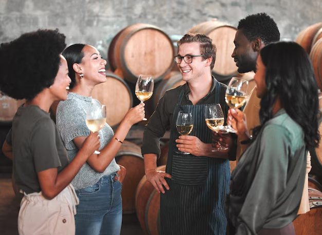
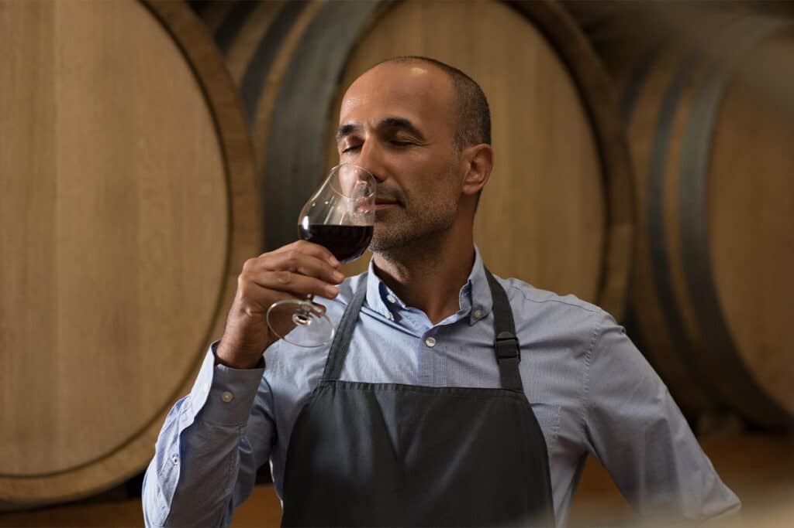

A equipe da Vinharia Agnello é formada por profissionais dedicados a oferecer uma experiência acolhedora e especializada aos clientes, unindo conhecimento sobre vinhos , atendimento atencioso e paixão pelo universo do mesmo. Cada integrante contribui para orientar na escolha ideal, apresentar rótulos de diferentes origens e garantir que cada visita seja marcada por confiança, qualidade e bom atendimento. Mais abaixo você encotrará mais sobre nosso time:

Responsável pela gestão das vendas, relacionamento com clientes e definição de estratégias comerciais da vinharia. Possui 8 anos de experiência no setor de bebidas premium e forte atuação em negociação com fornecedores e distribuidores.
Atua na seleção dos vinhos, harmonizações e orientação aos clientes sobre rótulos nacionais e importados. Tem formação em sommellerie e 6 anos de experiência em atendimento especializado no mercado vinícola.
Cuida do controle de entrada e saída de produtos, organização do armazenamento e monitoramento da validade dos rótulos. Trabalha há 5 anos na área logística de bebidas e alimentos.
Responsável pelas redes sociais, campanhas promocionais e divulgação de eventos da vinharia. Possui 4 anos de experiência em marketing digital voltado ao varejo gastronômico.
Realiza atendimento ao público, apoio nas vendas e orientação básica sobre produtos. Tem 3 anos de experiência em lojas especializadas e destaca-se pelo bom relacionamento com clientes.